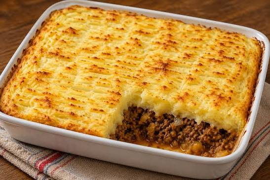
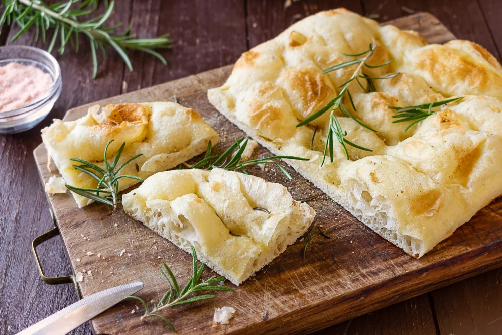
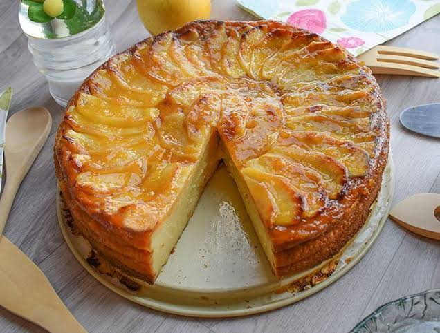
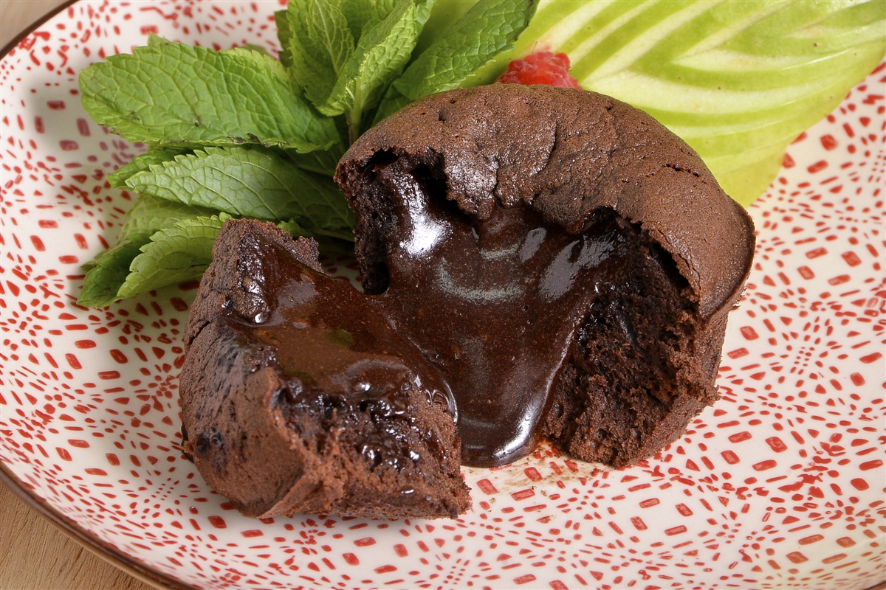
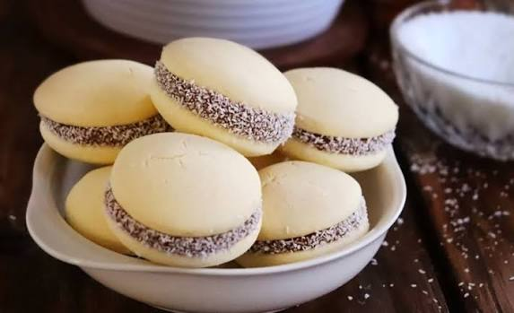

SaladoPastel de Papas Tradicional
Un reconfortante clásico de la cocina hogareña, con carne sazonada, cebollas salteadas y una suave capa de puré gratinado al horno.
📄 Ver receta completa (PDF)Platos auténticos explicados paso a paso. Elegí tu categoría preferida y descargá las guías completas en formato PDF.

SaladoUn reconfortante clásico de la cocina hogareña, con carne sazonada, cebollas salteadas y una suave capa de puré gratinado al horno.
📄 Ver receta completa (PDF) Salado
Salado
Jugosas empanadas de carne cortada a cuchillo con cebolla de verdeo, pimientos, especias autóctonas y masa casera crocante.
📄 Ver receta completa (PDF)
SaladoPan italiano de miga aireada y corteza dorada, aromatizado con romero fresco, cristales de sal marina y aceite de oliva virgen extra.
📄 Ver receta completa (PDF)
DulceBase quebrada crujiente rellena con láminas de manzana tierna, perfumada con canela en polvo y un suave brillo de almíbar.
📄 Ver receta completa (PDF)
DulcePostre gourmet de exterior esponjoso y centro líquido tibio de chocolate amargo 70%. El deleite definitivo para los amantes del cacao.
📄 Ver receta completa (PDF)
DulceTapas suaves que se deshacen en la boca, unidas por una generosa porción de dulce de leche repostero y rebozadas en coco rallado.
📄 Ver receta completa (PDF)